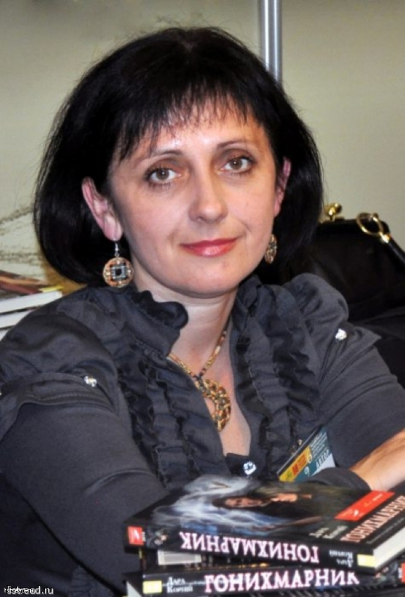
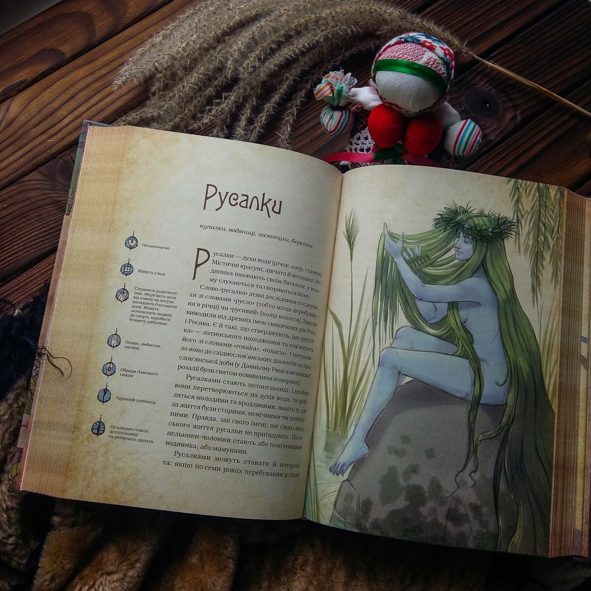
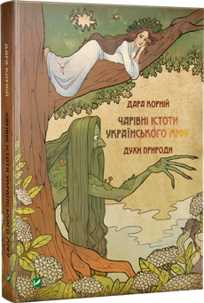
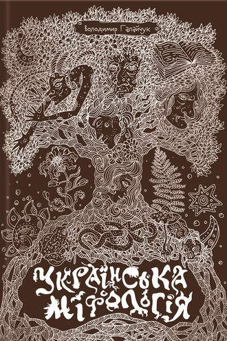
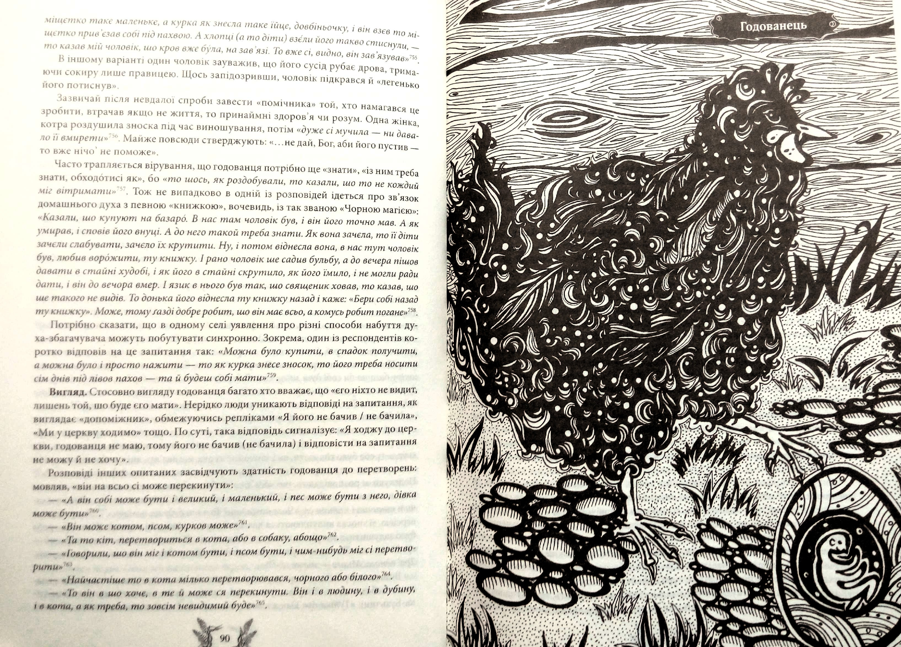
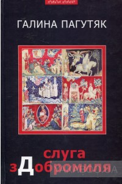
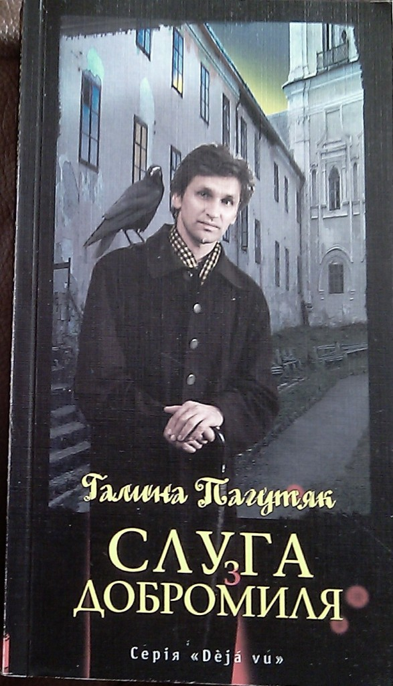

Дара Корній "Чарівні істоти українського міфу. Духи природи"
Ця книжка — чарівна. Ви не просто погортаєте її сторінки — ви поблукаєте стежками правічного лісу, почуєте його дихання, подивитесь в очі старенькому лісовикові, послухаєте чугайстрову сопілку. Може, вам щось прошепоче мавка або побалакає з вами поважний цар Ох… Ви постоїте біля річки — заскочите русалок за їхніми пустощами, а звідти недалеко й на гостину до суворих болотяника й болотяниці. А далі — прогулянка полем і луками, де вас зустрінуть і польовик, і спориш, і луговик… Та й вітри з повітрулями супроводжуватимуть вас під час мандрівки. І насамкінець свої таємниці відкриють духи пір року. Перед вами постане величезний і дуже цікавий шар культурної спадщини давніх українців, химерний світ чарівних істот праукраїнської міфології, досліджений і опрацьований Дарою Корній.
  22 травня 2018
22 травня 2018
Володимир Галайчук "Українська міфологія"
На сторінках цієї книжки постають легенди про потерчат і мавок, чортів і русалок Українці населяли дивними істотами хату і хлів, подвір’я, поле і ліс. У такий спосіб наші предки складали уявлення про Всесвіт і визначали місце людини в ньому. Ви поринете в багатий і цікавий, повний переказів і легенд світ української міфології! І раптом може здатися, що то не старі половиці скриплять, а тихо крадеться домовик, серед темних водоростей блисне зелене пасмо русалчиного волосся, а з темного лісу долине моторошне виття вовкулаки… Джерельну основу видання здебільшого склали етнографічні матеріали автора з Полісся, Волині, Бойківщини, Гуцульщини та Покуття. Для увиразнення образів персонажів і розширення географії дослідження залучено й записи студентів та аспірантів кафедри етнології історичного факультету ЛНУ ім. Івана Франка, а також уже опубліковані матеріали Павла Чубинського, Володимира Гнатюка, Володимира Шухевича, Людмили Виноградової та інших.
 18 травня 2018
Галина Пагутяк "Слуга з Добромиля"
В окрузі старовинного галицького містечка Добромиль в часи середньовіччя у вдови, яку вважають відьмою, народжується син. «Байстрюк!» – зневажливо називають хлопчика односельці поміж себе, однак насправді він є дхампіром (сином мертвого опиря і відьми), істотою іншої раси з особливими магічними властивостями. Саме йому протягом 800 років в різні історичні епохи доведеться стати для добромильської землі опікуном і захисником. За книгу «Слуга з Добромиля» автор, Галина Пагутяк, яку називають наймістичнішою письменницею України, стала лауреатом Шевченківської премії 2010 року.
  18 травня 2018